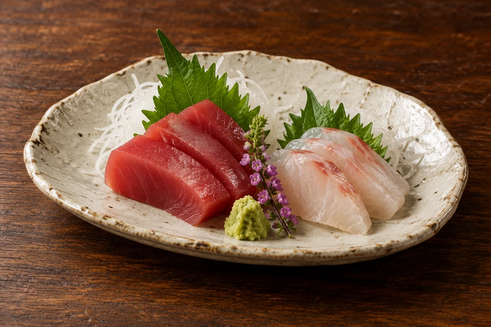
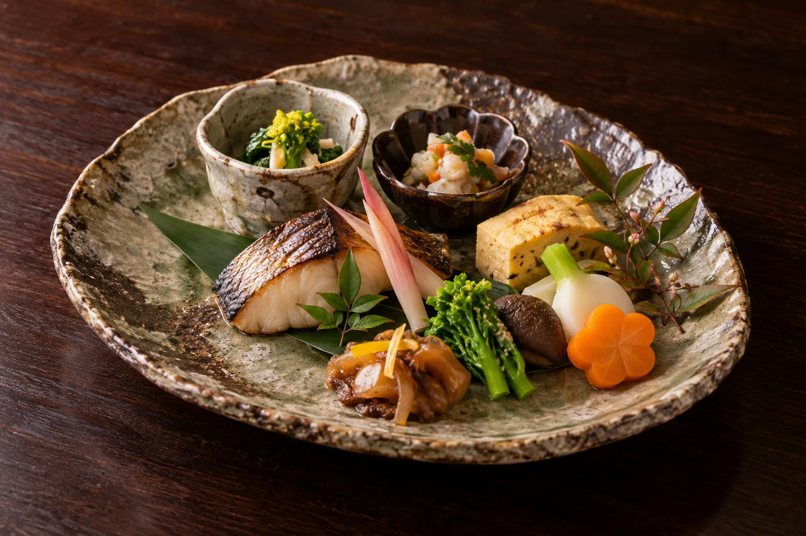
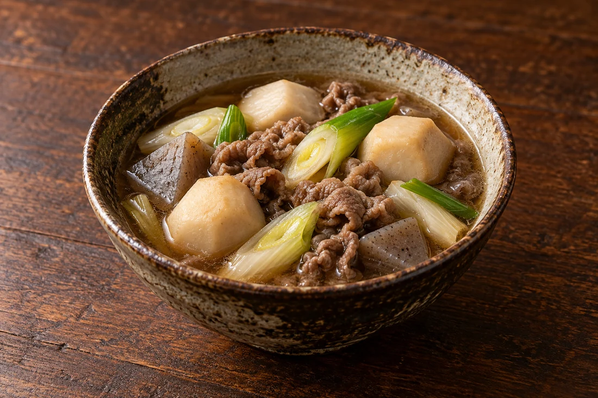
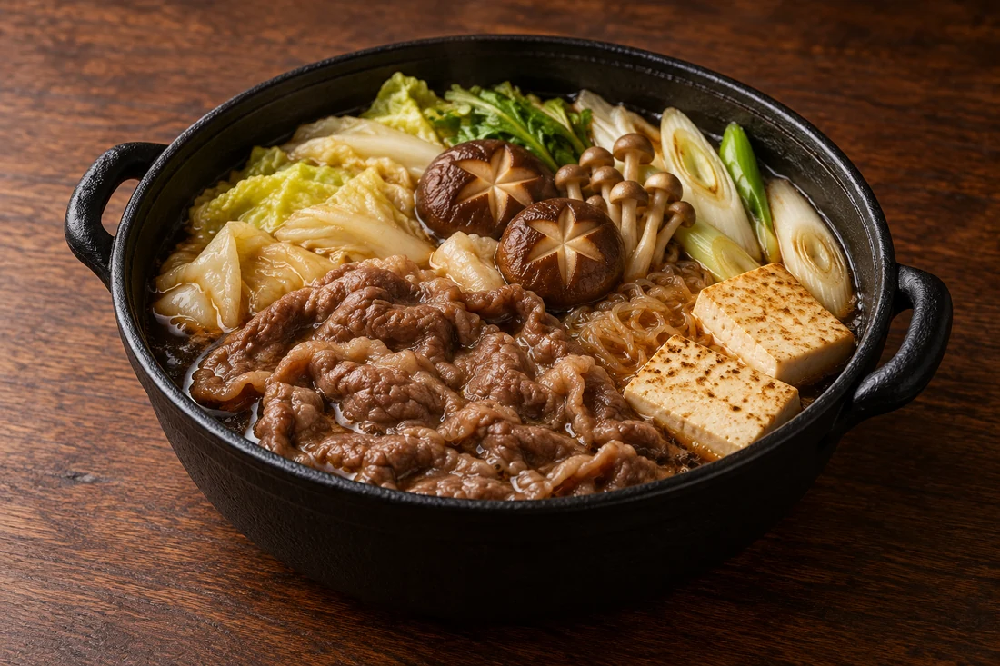
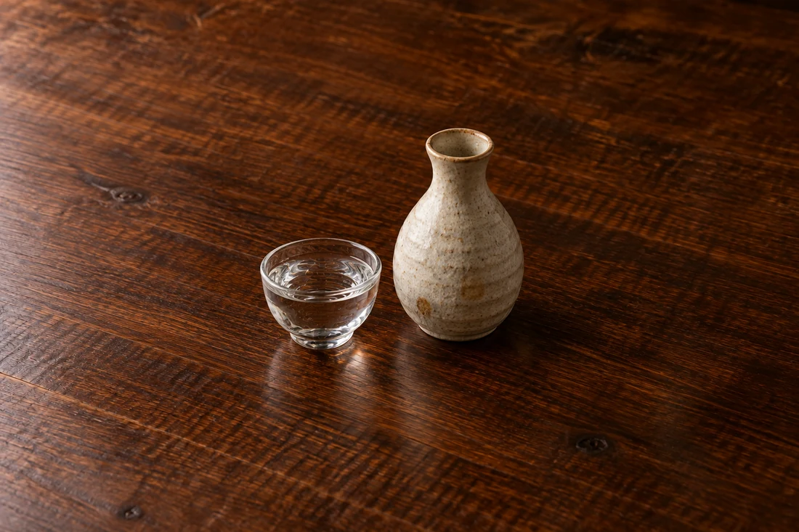
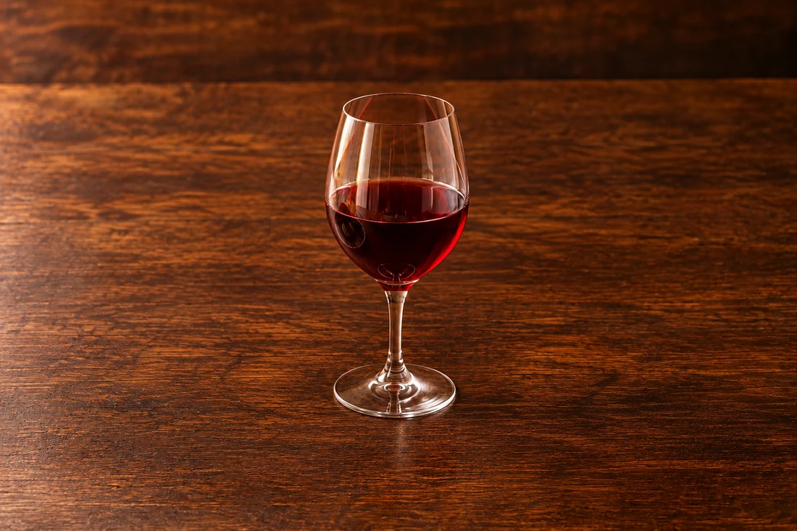

01
旬のお造り
その日の魚を、素材の味わいが引き立つ一皿に。

季節の料理を、少しずつ。
01 / 食彩播のお料理
02 / おまかせコース
ご友人との食事やご会食に。
料理の内容や人数、予算はお電話でご相談ください。
料理は季節・仕入れで変わります。料金・人数・お飲み物の条件はご予約時にご確認ください。
料理と予算を相談する ↗山形の味わい
山形らしい一皿や、鍋を囲む時間も。
ご希望の料理は事前にご相談ください。

具材の味を、あたたかな汁とともに。

牛肉と野菜を合わせた、鍋の味わい。
料理は一例です。提供の有無・内容は季節や仕入れにより変わります。
03 / お酒
地酒を中心に、日本酒とワインを。
その日の料理に合わせて、お好みをお聞かせください。

季節の料理と合わせて一献。

和の一皿との取り合わせも。
銘柄・在庫はお尋ねください。お酒は20歳になってから。
ご利用の前に
ご希望の日時・人数、ご予算やお料理について。
お電話でお気軽にお問い合わせください。
食物アレルギーやお苦手な食材は事前にお知らせください。対応の可否は店舗へご確認ください。
仕入れによりお料理は変わります。ご予算やお苦手な食材とともに、お電話でご相談ください。
カウンターや個室のご希望、ご人数をお電話でお知らせください。空席・利用条件をご案内します。
料理に合わせた日本酒やワインについて、お店にお気軽にお尋ねください。
日曜日のほか、不定休があります。臨時休業や営業時間はご来店前にお電話でご確認ください。
ACCESS / 店舗案内
営業日・営業時間は変更になる場合があります。お出かけ前にお電話でお確かめください。
Google マップを開く地図から経路をご確認いただけます。
山形・香澄町 / 創作和食